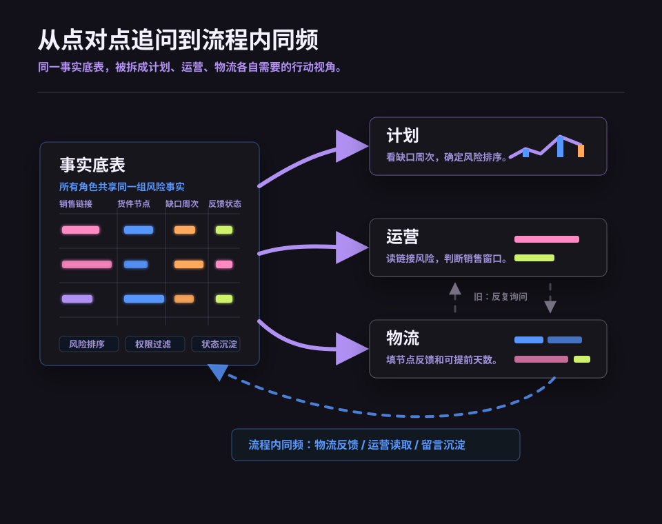

项目案例
海外衔接协作工作台
把海外在途、销售缺口、物流反馈和角色责任放到同一事实底表上，让计划、运营、物流在各自视角中完成同频。
项目背景
海外衔接原本高度依赖点对点沟通。运营发现销售窗口风险后，需要直接询问物流；物流再临时整理货件节点、预计上架、是否可提前等信息，最后再回复运营。
解决方案
计划看缺口周次和风险排序。
运营看链接风险和销售窗口。
物流填写节点反馈和可提前天数。
流程变化
工具进入业务流程后，原来“运营追问、物流整理、再人工回复”的链路，被改造成流程内同频：物流反馈、运营读取、留言沉淀都留在同一页面里。
